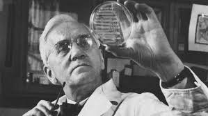

Corrientes Filosóficas Contemporaneas
Contexto Historico
Siglo XVIII
- Revoluciones industriales
- Avances cientificos
- Cambios sociopoliticos
×

Revoluciones Industriales (XVIII-XX)
Revoluciones principales:
- •Revolucion Francesa
- •Revolucion Rusa
- •Independencia de países en América y África.
×

Avances Cientificos (1900-2009)
Principales avances:
- •Descubrimiento de la estructura de atomo
- •Teoria de la relatividad de ainstain
- •El primer antibiotico.
×

Cambios Sociopoliticos (XVIII-XXI)
Principales Cambios:
- •Difusion de la democracia y la republica
- •Revoluciones burguesas y expansión de derechos
- •Movimientos independentistas y formación de estados-nación
Principales filósofos y sus ideas
Siglo XVIII
- Friedrich Nietzsche
- Karl Marx
- Jean-Paul Sartre
- Michel Foucaulte
×

Friedrich Nietzsche (1844-1900)
Ideas principales:
- •Crítica al racionalismo
- •Consecuencias del racionalismo
- •Críticas a los filósofos griegos
- •Crítica a la religión
- •Esclavitud moral
×

Karl Marx (1818-1883)
Ideas principales:
- •Materialismo HistoricoTr
- •Lucha de clases
- •Alineacion del trabajador
- •Conciencia de clases
- •Dictadura del ploretariado
- •Comunismo
- •Materialismo dialectico
×

Jean-Paul Sartre (1905-1980)
Ideas principales:
- •El hombre es libre y responsable
- •El hombre es subjetividad
- •El hombre ocupa el centro de la existencia
- •El sentido de la vida es una crecion intima
×

Michel Foucault (1926-1984)
Ideas principales:
- •Relacion entre poder y conocimiento
- •Biopolitica y biopoder
- •La genealogia del poder
- •Critica a las instituciones
Obra representativa
Siglo XVIII
- El ser y la nada de sartre
×

El ser y la nada de Sartre (1943)
- Explora las relaciones interpersonales y la influencia del prójimo en la autoconciencia. Introduce el concepto de "la mirada", que convierte al individuo en un objeto, revelando facetas de sí mismo antes desconocidas. Aunque esta interacción es esencial para la autoconciencia, también puede generar conflicto y alienación, ya que la mirada del otro puede limitar la libertad personal y reducir al individuo a una identidad fija.
Influencia en la actualidad
Siglo XVIII
- Filosofia politica
- Existencialismo
- Posmodernismo en el pensamiento actual
×


Filosofia politica
- La filosofía política ha sido clave en la comprensión y transformación de las estructuras sociales, económicas y gubernamentales. Ha contribuido a la reflexión sobre la democracia, los derechos humanos y la justicia social, influyendo en marcos normativos y políticas públicas. Pensadores como Rawls, Habermas y Foucault han replanteado conceptos de equidad, legitimidad y poder. Además, analiza los efectos de la globalización, el neoliberalismo y la crisis institucional, proporcionando herramientas para repensar la relación entre Estado, mercado y sociedad. Su impacto se extiende al ámbito jurídico y económico, abordando desigualdad, sostenibilidad y derechos en contextos cambiantes.
Existencialismo
- El existencialismo es un movimiento filosófico del siglo XX influenciado por pensadores como Schopenhauer, Kierkegaard, Nietzsche y Husserl. Se centra en la libertad humana como valor fundamental, rechazando determinismos trascendentes, naturales o sociales. Su punto de partida es la vivencia existencial, analizando la existencia concreta y sus categorías.
Posmodernismo en el penmsamiento actual
- El posmodernismo cuestiona las ideas de verdad absoluta y progreso lineal, promoviendo una visión pluralista y relativista de la realidad. Filósofos como Lyotard, Foucault y Derrida influyeron en la crítica a los discursos totalizantes y en la deconstrucción de conceptos hegemónicos. En política, ha impactado debates sobre identidad y multiculturalismo, pero también ha sido criticado por su relativismo. Aunque sigue influyendo en la filosofía, el arte y la literatura, hoy enfrenta una reacción que revaloriza la razón y la búsqueda de verdades compartidas.